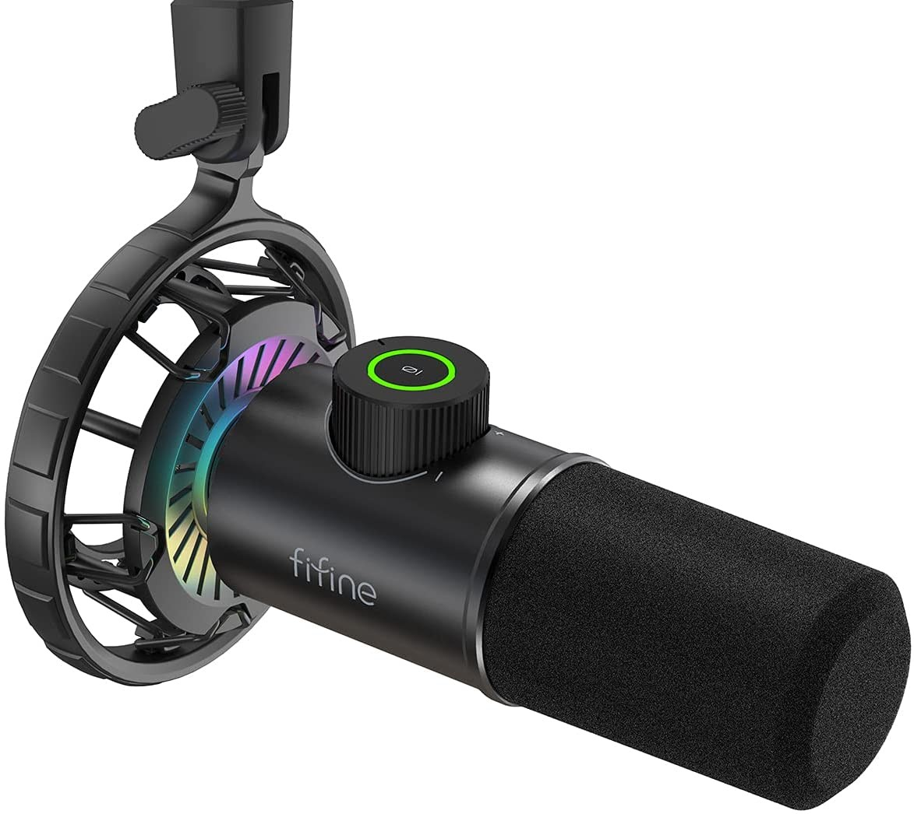
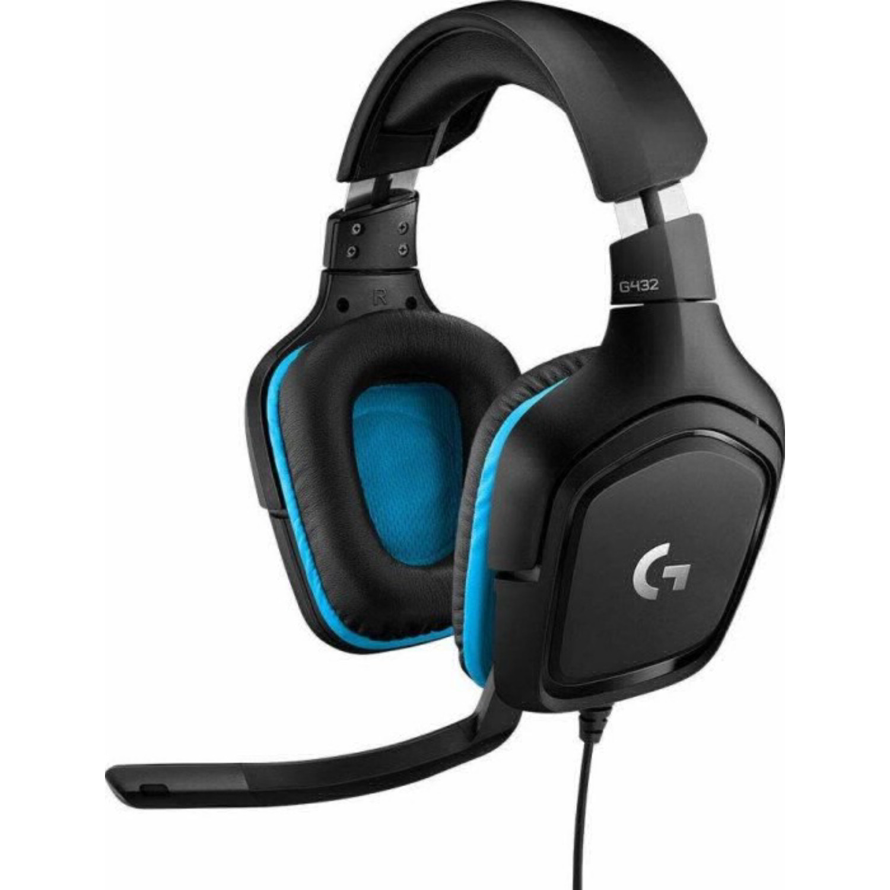
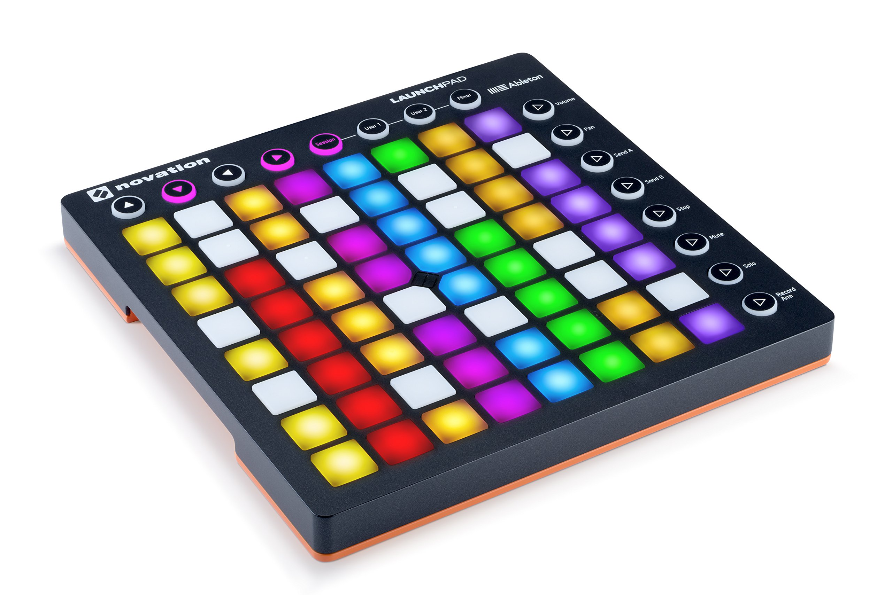

Na tej spletni strani lahko najdete kaj jaz uporabljam za glasbeno produkcijo.
Tip: Dinamični Vrsta povezave: USB tipa C na tip A, kar omogoča enostavno povezavo z računalniki, Maci in celo igralnimi konzolami. Frekvenčni odziv: 70 Hz do 15 kHz, kar omogoča jasen in uravnotežen zvok, primeren za govor. Občutljivost: -50 ± 3 dB pri 1 kHz, omogoča zajemanje subtilnih zvokov. Bitna globina in vzorčna hitrost: 16-bit/48kHz, kar zagotavlja dobro kakovost digitalnega zvoka. Maksimalni zvočni tlak (SPL): 110 dB, omogoča obvladovanje glasnih zvokov brez popačenja. Razmerje signal/šum (S/N): ≥-70 dB, kar pomeni manj ozadnega šuma v zapisu. Enakovredni hrup: -77 dB, označuje nizek nivo šuma mikrofona. Priložen stojalo: Mikrofon vključuje kovinsko stojalo in plastično zaščito proti tresljajem. Kompatibilen z: PC, Mac, PS4, PS5, Android, iOS, kar omogoča širok spekter uporabe.
Vrsta gonilnika: 50 mm, ki zagotavlja širok in podroben zvočni spekter. Frekvenčni odziv: 20 Hz do 20 kHz, kar omogoča širok razpon slišnih frekvenc, primeren za različne vrste avdio vsebin. Tip mikrofona: Slušalke vključujejo 6 mm boom mikrofon s kardioidnim (enosmernim) vzorcem zajemanja, idealen za jasno komunikacijo glasu z zmanjšanjem hrupa iz okolice. Vrste povezav: Podpira povezave USB Type-A in 3,5 mm, kar izboljšuje njegovo združljivost z več platformami. Material ušesnih blazinic: Usnjeni material, ki zagotavlja udobje med dolgotrajno uporabo. Združljivost: PC, Mac, PlayStation 4, Xbox One, Nintendo Switch in mobilne naprave z uporabo 3,5 mm priključka ali USB povezave. Programska oprema: DTS Headphone 2.0 prostorski zvok je na voljo samo za Windows OS in zahteva programsko opremo Logitech G HUB. Dizajn mikrofona: Mikrofon je mogoče zlahka utišati s preklopom navzgor, ko ni v uporabi.
Gumbi: Launchpad MK2 vsebuje 64 (8x8 mreža) kvadratnih, večbarvnih, osvetljenih gumbov, ki so občutljivi na dotik. Dodatni Gumbi: 8 okroglih večbarvnih osvetljenih sistemskih gumbov, ki so dodeljivi, in 8 funkcionalnih gumbov, ki niso dodeljivi. Povezljivost: Naprava ima Micro USB priključek Programska Oprema: Launchpad MK2 je združljiv z Ableton Live ter drugimi glasbenimi programskimi paketi, ki podpirajo MIDI. Operacijski Sistemi: Podpira Windows 7, Windows 8 in Windows 10 ter macOS. Osvetlitev: Launchpad MK2 ima RGB osvetlitev, ki uporabnikom omogoča lažje sledenje stanju sprožilcev, še posebej v situacijah z nizko osvetlitvijo ali na odru.